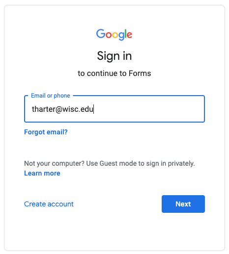

For non-anonymous forms, we will often require you to fill in this form using your "@wisc.edu" signin; this allows us to verify who you are. If you try using a different signin on one of these, you'll see an error saying "You need permission: This form can only be viewed by users in the owner's organization." If Google automatically signs in for you, please open the link in a "New Incognito Window" in Chrome.
1. Who are you? To help us better understand who is taking this class, please fill this out.
2. Office Hour Feedback Form. Let us know whether office hours were useful. We're looking for ways to improve, and also appreciate positive feedback!
3. Partner Form. For each project, you should fill this once to indicate whether you're doing the project alone or with a partner. Only one partner should do the submission. You can change partners each project, but not during a project. Do NOT submit a person as your partner unless you've discussed with them in advance and mutually agreed to work together.
4. Exam Reweigting Request. Fill this if you need to miss exam 1 and/or exam 2 and want to reweight. Submitting the form does not guarantee approval (that must be explicit via an email from the instructor). Exam 3 is not missable, only reschedulable.
For forms requiring authentication, make sure you sign in with your @wisc.edu, like this:
